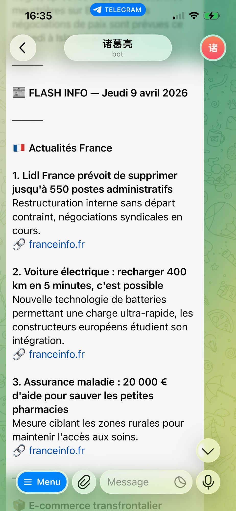

Avant, je passais 45 minutes chaque matin à ouvrir des dizaines d'onglets — Le Monde, newsletters, groupes WeChat — pour finir par ne rien retenir d'important. J'avais l'impression d'avoir travaillé avant même d'avoir commencé.
Maintenant, à 7h00 pile, un message arrive dans mon Telegram. Six domaines couverts : actualité française, e-commerce, cross-border, IA, carrière, géopolitique. Pour chaque domaine, 3 points clés — différents de la veille — avec résumé et lien source.
Temps de lecture : 5 minutes. Pas de pub. Pas de clickbait.
Et si je n'ai même pas ces 5 minutes ? L'assistant génère aussi une version audio, lue par une voix posée, envoyée en MP3 directement sur Telegram. J'appuie sur play en préparant mon café.

Le brief — section Actualités France
L'assistant s'appelle 丁丁 (Tintin) — comme le reporter belge dans la bande dessinée, et c'est intentionnel. Il scrape des flux RSS publics gratuits, filtre, dédoublonne, rédige, et envoie. Zéro API payante. Zéro intervention manuelle.
Ça m'a pris quelques heures à configurer. Maintenant ça tourne tout seul.
« La meilleure automatisation, c'est celle qu'on oublie qu'on a mise en place — parce qu'elle fonctionne sans qu'on y pense. »